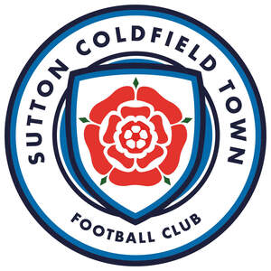

Trade Mark Journal No.2026/011 13 March 2026
UK00004347443 1 March 2026 (14,25,26,35,41,45)

- Class 14
- Lapel pins [jewellery]; Lapel pins; Key rings [trinkets or fobs]; Key rings [split rings with trinket or decorative fob]; Lanyards for keys; Key holders [trinkets or fobs].
- Class 25
- Football shirts; Replica football kits; Sports jerseys; Sports over uniforms; Sport shirts; Sports caps; Sports socks; Hats; Bobble hats; Woolly hats; Baseball hats; Fashion hats; Bucket hats; Baseball caps and hats; Sports caps and hats; Sun hats; Beanies; Scarves; Knitted gloves; Coats; Soccer shirts; Football jerseys; Sports shirts; Polo shirts; Short-sleeved shirts; Open-necked shirts; T-shirts; Sports jerseys and breeches for sports; Polo sweaters; Sports pants; Sweat shirts; Tee-shirts; Jackets being sports clothing; Sweatshirts; Hooded sweat shirts; Clothing for sports; Clothes for sport.
- Class 26
- Button badges; Embroidered badges.
- Class 35
- Business management of sporting clubs; Design of advertising brochures; Design of advertising flyers; Electronic billboard advertising; Design of advertising logos; Leasing of advertising hoardings; Banner advertising; Outdoor advertising; Advertising flyer distribution; Digital advertising services; Business merchandising display services; Advertising and promotional services; Promotional and advertising services; Promotional advertising services; Provision of advertising space on electronic media; Advertising, marketing and promotional services; Advertising, promotional and marketing services; Marketing, advertising, and promotional services; Providing business information via a web site; Providing business information via a website; Compilation of advertisements for use as web pages; Advertising of business web sites; Providing marketing information via websites; Promotion, advertising and marketing of on-line websites; Composing advertisements for use as web pages; Online advertising; Online advertisements; Advertising and marketing services provided by means of social media; Advertising via electronic media and specifically the internet; Sales promotion using audiovisual media.
- Class 41
- Organisation of football competitions; Organisation of sports events in the field of football; Football academy services; Entertainment in the nature of football games; Organization of soccer games; Sports coaching; Organising of football events; Coaching in the field of sports; Organization of soccer competitions; Soccer camps; Conducting of soccer games; Arranging of soccer games; Sports officiating; Sports club services.
- Class 45
- Online social networking services; Internet-based social networking services; On-line social networking services.
SUTTON COLDFIELD TOWN FOOTBALL CLUB LIMITED